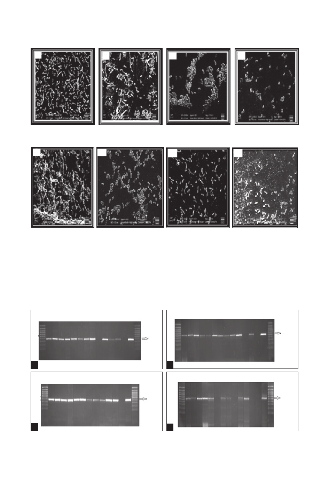

Erdal B, Yalınay M, Elmas Ç, Yazıcı GN.
A
B
C
D
Resim 1. A. Antibiyotiksiz ortamda ve B. Piperasilin/tazobaktam MİK/8, C. MİK/4, D. MiK/2 konsantrasyon-
larında P.aeruginosa biyofilm tabakasının SEM görüntüsü.
A
B
C
D
Resim 2. A. Antibiyotiksiz ortamda ve B. Siprofloksasin MİK/8, C. MİK/4 D. MiK/2 konsantrasyonlarında
P.aeruginosa biyofilm tabakasının SEM görüntüsü.
Çalışmada incelenen 24 izolatın 23’ünde; lasI (605 bp) ve lasR (725 bp) genlerini belir-
ten amplifikasyon ürünü saptanırken, bir izolatta lasI ve lasR gen amplifikasyon ürünü sap-
tanmamıştır. LasI ve lasR genleri negatif olan izolatın, yara yerinden izole edilen aynı izolat
olduğu görülmüştür. Çalışmada incelenen 24 izolatın hepsinde rhlI geni (625 bp), 13’ünde
rhlR geni (730 bp) saptanmış, 11 izolatta ise rhlR geni saptanmamıştır. Bazı izolatların amp-
lifikasyon ürünlerinin görüntüsü Resim 3’te gösterilmiştir.
M 1 2 3 4 5 6 7 8 9 10 11 12 NK PK M
M 1 2 3 4 5 6 7 8 9 10 11 12 NK PK M
605 bç
725 bç
A
M 1 2 3 4 5 6 7 8 9 10 11 12 NK PK M
B
M 1 2 3 4 5 6 7 8 9 10 11 12 NK PK M
625 bç
730 bç
C
D
Resim 3. A. lasI I, B. lasR, C. rhlI ve D. rhlR genlerinin jel görüntüsü.
M: Moleküler ağırlık standardı, PK: P.aeruginosa ATCC 27853 NK: Negatif kontrol.
MİKROBİYOLOJİ BÜLTENİ
553